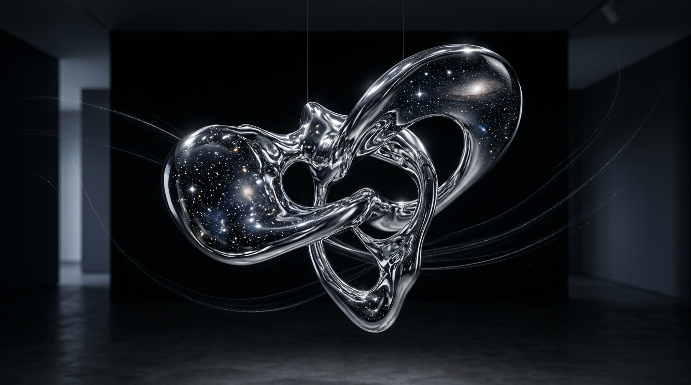

Liquid Chrome • Luxury01. Liquid Chrome Surrealism & Obsidian Art
Hyper-detailed metallic reflections, floating liquid chrome curves mirroring the cosmic night sky, soft silver light trails, and museum exhibition lighting against obsidian black.
[IMAGE_URL] surreal fine art photography of a floating liquid chrome and polished silver sculpture, reflecting starry cosmic darkness, hyper-detailed metallic reflections, obsidian black background with soft silver light trails, museum exhibition lighting, 8k resolution, minimalist luxury aesthetic --ar 16:9 --style raw --s 350